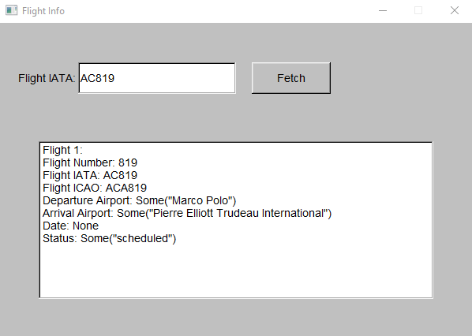

A piece of flight tracking software created in Rust using the Aviation Stack API.
It is a piece of software that allows users to input a flight number [ICAO], and get information on said flight.
When there is a change in flight status [e.g: the flight lands for instance] the user will get a notification.
I came up with the idea while working in taxi-dispatch, as the software we were using would allow the user to input flight numbers and link them to bookings, but it would not connect to any API in order to give the dispatcher notifications in relation to the flight, which proved problematic on a few occasions.